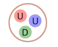
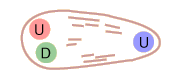

Bag Model of Quark Confinement
In dealing with the nature of quark confinement, one visualization is that of an elastic bag which allows the quarks to move freely around, as long as you don't try to pull them further apart. But if you try to pull a quark out, the bag stretches and resists.
|  |  |  | The quarks of a proton are free to move within the proton volume | If you try to pull one of the quarks out, the energy required is on the order of 1 GeV per fermi, like stretching an elastic bag. | The energy required to produce a separation far exceeds the pair production energy of a quark-antiquark pair, so instead of pulling out an isolated quark, you produce mesons as the produced quark-antiquark pairs combine. |
The models of quark confinement help in understanding why we have not seen isolated quarks. If one of the constituent quarks of a particle is given enough energy, it can create a jet of mesons as the energy imparted to the quark is used to produce quark-antiquark pairs.
Experiments show that the forces containing the quarks get weaker as the quarks get closer together, so that within the confines of a baryon or hadron, they are essentially free to move about. This condition is referred to as "asymptotic freedom".
Particle concepts
Reference
Rohlf
Ch. 18
| HyperPhysics***** Quantum Physics | R Nave |